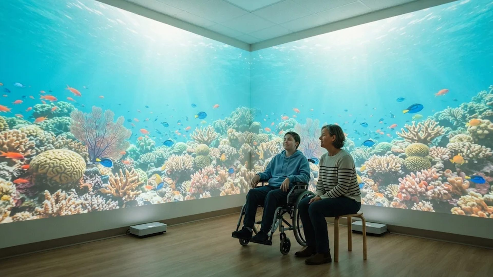
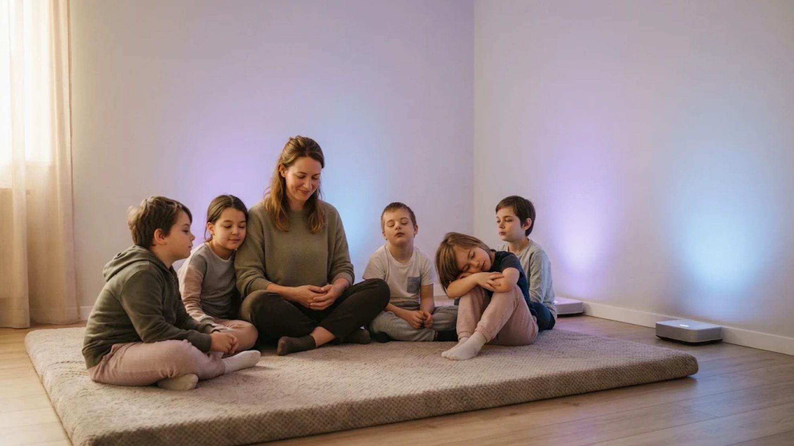

Soba pod morem

Osoba u invalidskim kolicima sjedi usred sobe, a sa sva četiri zida oko nje pliva karipski greben. Tirkizna voda, koralji, ribe i sunčeve zrake koje padaju s površine. Ništa se ne mora raditi, dovoljno je biti tu i gledati.
Kako je složeno

Na podu nema ničega osim osobe. Sve visi sa stropa: uz svaki zid jedan ultrakratki laserski projektor okrenut naopako, koji baca sliku odozgo na zid, i osam malih zvučnika Adam Audio D3V u četiri para, također naopako, na stropnim nosačima s navojem. Uz svaki zvučnik je mobitel.
Svaki par zvučnika spaja se na Mac Mini preko USB-a. USB ide kroz zid, mrežnim kabelom do utičnice na stropu. Mac Mini u macOS-u spaja sva četiri para u jednu veliku zvučnu karticu s osam kanala, pa svaki zvučnik dobiva svoj zvuk. Zvuk vodi Ableton Live, koji kišu, valove ili ribu koja prolazi može smjestiti u bilo koji kut sobe i polako ga pomicati. Isti Mac Mini šalje sliku na četiri projektora.
Mobitel uz svaki zvučnik
Mobitel uz zvučnik ima dvije uloge. Na ekranu pokazuje što taj zvučnik upravo svira, kao živi val zvuka, pa terapeut odmah vidi gdje je koji zvuk. A kamerom gleda u sobu. Osam kamera iz osam smjerova zna gdje je osoba, je li blizu ili daleko i kako joj stoji tijelo. Kad se osoba približi zvučniku, njegov zvuk se mijenja.
Pokret pokreće zvuk i sliku

Za to koristim svoju aplikaciju Skeleton. Ona na sliku osobe stavlja kostur od linija i točaka, istovremeno s četiri ili više kamera, a mobiteli mogu biti te kamere. Terapeut odabere pokret, na primjer obje ruke gore, ruke u stranu ili naginjanje u jednu stranu, i aplikacija ga prikaže kao prozirnu siluetu. Dijelovi tijela postaju zeleni kad se poklope. Kad osoba pogodi pokret i zadrži ga, dolazi nagrada: jato riba i kornjača doplivaju na zid, a zvuk zasvijetli, recimo zvono ili val. Razina se može podesiti, od vrlo blage za početak do točnije.
Tako soba više nije samo za gledanje. Malo podignuta ruka može pokrenuti kišu, a okret glave može pozvati kita s druge strane sobe.
Oprema i softver
| Stavka | Kom. | Cijena po kom. | Ukupno | Gdje |
|---|---|---|---|---|
| Apple Mac mini (M6) | 1 | 1.049,00 € | 1.049,00 € | apple.com/de |
| Optoma ZH430UST, ultrakratki laserski projektor (omjer 0,25:1), Full HD, 4.000 lumena | 4 | 1.398,00 € | 5.592,00 € | beamer-discount.de |
| Optoma OWM3000, stropni nosač za ultrakratki projektor | 4 | 107,73 € | 430,92 € | office-partner.de |
| Adam Audio D3V, par aktivnih zvučnika s USB-C ulazom | 4 | 259,00 € | 1.036,00 € | Thomann |
| Adam Audio D3V produžni kabel između zvučnika u paru | 4 | 14,99 € | 59,96 € | Thomann |
| iriz CM550, stropni nosač s navojem 3/8" za zvučnik | 8 | 46,00 € | 368,00 € | Thomann |
| Lindy USB 2.0 preko mrežnog kabela Cat.6, do 50 m (USB kroz zid) | 4 | 129,00 € | 516,00 € | Thomann |
| Godox MTH02, držač mobitela s navojem 1/4" | 8 | 18,00 € | 144,00 € | calumet.de |
| Mobitel s kamerom uz svaki zvučnik (rabljeni Android, procjena) | 8 | 120,00 € | 960,00 € | procjena |
| Ableton Live 12 Suite (s Max for Live), vodi svih osam zvučnika | 1 | 479,00 € | 479,00 € | Thomann |
| Envelop for Live, besplatni dodatak za prostorni zvuk na više zvučnika | 1 | 0,00 € | 0,00 € | envelop.us |
| Skeleton, moja aplikacija za praćenje pokreta s više kamera | 1 | 0,00 € | 0,00 € | Marko Boško |
| Procijenjeni ukupni iznos (cijene od 21.11.2026.) | 10.634,88 € | |||
Projektori vise naopako sa stropa uz svaki zid i bacaju sliku odozgo na zid s malo udaljenosti, pa nema sjena ljudi ni zrake u očima. Prije kupnje treba kod Optome potvrditi da ZH430UST radi okrenut naopako i da mu odgovara nosač OWM3000. Adam D3V ima navoj 3/8" s donje strane, pa se izravno navije na stropni nosač. Svaki zvučnik treba i sigurnosnu sajlu, a proizvođač ne navodi rad naopako, pa to treba potvrditi s Adamom. Godox ne radi stropne nosače, pa je umjesto stalka za rasvjetu odabran stropni nosač s istim navojem. Glavni zvučnik u svakom paru treba struju (24 V blok), kao i USB produžnik na stropu, pa uz svaki par treba utičnica na stropu. U iznos nisu uključeni HDMI kabeli do projektora, mrežni kabeli kroz zid, utičnice i ugradnja. Cijene uključuju PDV. Prije kupnje provjeri koliko zaslona odabrani Mac Mini može voditi odjednom, jer četiri projektora traže četiri izlaza.
Soba za terapiju bojom i zvukom
Ista soba s četiri zida, ali ovaj put s drugom namjenom: boja i zvuk. Osnova joj je moja Mantra Room, a u njoj se slušaju tri vrste glazbe: moje mantre s vokalima, indijske pjesme i Hemi-Sync glazba.
Kako to izgleda


Što je BrainSync
BrainSync je ovdje Hemi-Sync tehnologija. Hemi-Sync (skraćeno od engleskog hemispheric synchronization, sinkronizacija hemisfera) razvio je Robert Monroe, a prodaje se kao glazba s binauralnim ritmovima, namijenjena opuštanju i usmjeravanju pažnje. To su tvrdnje samih autora, a ne neovisna potvrda.
Podrobnije objašnjenje stiže uskoro.
Izvor: hemi-sync.com (službena stranica).
Slušaj uzorke
Tri mogućnosti: mantre s vokalima, indijske pjesme i Hemi-Sync glazba. Svaki uzorak traje jednu minutu.
Ovo je uzorak iz aplikacije Hemi-Sync Flow: jednominutni isječci 22 instrumentalne skladbe, odabrane za opuštanje osoba s posebnim potrebama.
Uzorci od jedne minute stižu uskoro.
Terapija na cijelom zaslonu: polagana slika mora i boja uz glazbu. Slika se mijenja vrlo sporo, bez bljeskova. Dodirom prikažeš kontrole, a tipka Esc ili gumb Izlaz vraća te na stranicu.
Preporučeni albumi
Albumi Hemi-Sync glazbe na koje se, prema našem izboru, vrijedi usredotočiti u terapijama.
Popis albuma stiže uskoro.
Za Brigitu: aplikacija Hemi-Sync Flow
Draga Brigita, Hemi-Sync Flow je aplikacija za mobitel u kojoj je cijela Hemi-Sync glazba na jednom mjestu. Slušaš je po temama, kao što su opuštanje, san ili fokus, i svaka tema ima svoje seanse. Najjednostavnije je staviti slušalice, sjesti udobno i pustiti jednu seansu do kraja. U našoj sobi isti se zvuk može pustiti kroz zvučnike, dok boje i more plove po zidovima. Aplikacija se besplatno preuzima, a puni sadržaj dolazi uz pretplatu.
Alan Tower
Alan Tower je osoba koja je osmislila i stvorila aplikaciju Hemi-Sync Flow te je i danas organizira. Izrađuje i kristalna zvona Euphony (više u nastavku), a flautu Innato osmislio je zajedno s majstorom Hansom Houkesom (innato.us).
Preporuka za osoblje: Euphony Trio (kristalna zvona) – Alan Tower
Euphony su kristalna zvona koja se vrte do sedam minuta, a njihov se zvuk kaskadno razlijeva cijelom sobom. Alan Tower izrađuje ih u više izvedbi: Euphony Solo, Duo i Trio te Bubble Board, a izrađuje i batiće za sviranje. Za našu sobu preporučujemo Euphony Trio, jer dugi, polagani tonovi pune prostor mirnom prisutnošću dok se slika mora lagano miče po zidovima. Svira ga terapeut, a ostali samo slušaju i osjećaju.
Cijena na upit. Alan Tower nudi i savjetovanje preko Zooma.

Poslušaj: Euphony Flumie Float (oko 56 minuta, najbolje sa slušalicama) innato.us
Preporučujemo: Marko Borić, terapeut i graditelj bubnjeva

Marko Borić gradi bubnjeve i može napraviti velike bubnjeve na kojima svira više djece zajedno, što je savršeno za grupne terapije djece s posebnim potrebama. Uz to može voditi radionicu izrade tresalica (šejkera) i bubnjeva, u kojoj svatko sam napravi svoj instrument, pa je sviranje još draže.
Instrumenti za sviranje
Jednostavni i sigurni instrumenti na kojima osobe s posebnim potrebama mogu svirati same. Izrađuje ih Stonewhistle (Hans Houkes, Nizozemska), od najlakšeg prema zahtjevnijima.
Pet tonova i oktava, pa svaka kombinacija rupica zvuči skladno. Svira se jednim sporim, mekim izdahom, tako da gotovo nikakva tehnika nije potrebna.
Mala i lagana glinena flauta nježne ljestvice na kojoj nijedan ton ne zvuči krivo. Lako se drži jednom rukom i svira se tihim dahom.
Mala flauta s tri komore u kojoj svaka kombinacija prstiju daje ugodan troglas, pa je nemoguće pogriješiti. Teška je samo 100 g.
Ista jednostavna Natey flauta, malo dubljeg glasa, bez potrebe za ikakvim predznanjem. Dolazi sa zaštitnom torbicom.
Ista ZEN flauta u većoj izvedbi: niži ton i više mjesta za veće ili manje precizne ruke.
Velika flauta s tri komore, drži se objema rukama. Svaka kombinacija prstiju zvuči lijepo, pa je razumljiva svakome.
Dvije povezane pentatonske komore daju topao stereo zvuk: jedna strana za melodiju, druga za bordun. Ova poveznica vodi na preprodavača OneTone, a ne u Stonewhistleovu trgovinu; cijena je početna i ovisi o tonalitetu.
Iskreno: flaute se rade po narudžbi i čeka se otprilike 3 do 5 mjeseci. Glina je lomljiva i čisti se samo suhom mekom krpom. Za sviranje je potreban dah. Ako dah nije moguć, dobra je alternativa bez daha veliki bubnjevi i radionica tresalica Marka Borića. Prije narudžbe za osobe s posebnim potrebama preporučujemo upit proizvođaču.
Preuzmi aplikacije
Chakra and Elements Toning (Mantra)
Aplikacija za meditaciju, sa zvukovima čakri i elemenata. Za Android.
Kognitivna aplikacija za Eminu
Još je u izradi i nema javnog izdanja. Čim bude spremna, preuzimanje će se pojaviti ovdje.
Uskoro
Projekt izrađen za
Edukacijsko-rehabilitacijski fakultet Sveučilišta u Zagrebu
Za: prof. dr. sc. Renata Martinec i asistentica Brigita Vilč, Odsjek za motoričke poremećaje, kronične bolesti i art terapije (ERF)
Fakultet je 1962. godine počeo kao Visoka defektološka škola, a danas je na kampusu Borongaj, gdje oko 1100 studenata uči za edukacijske rehabilitatore, logopede i socijalne pedagoge. Uz prijediplomske i diplomske studije imaju specijalistički studij rane intervencije, doktorski studij prevencijske znanosti i studija invaliditeta te niz edukacija u Centru za cjeloživotno učenje. Rade u odsjecima za inkluzivnu edukaciju i rehabilitaciju, logopediju, oštećenja vida, oštećenja sluha, poremećaje u ponašanju, kriminologiju te motoričke poremećaje, kronične bolesti i art terapije. Istražuju i u laboratorijima, primjerice za asistivnu tehnologiju, potpomognutu komunikaciju i dječju komunikaciju. Praksa se odvija u njihovom Nastavno-kliničkom centru, gdje stručnjaci pružaju procjenu, individualnu i grupnu podršku te savjetovanje, a studenti uče promatrajući rad s korisnicima. Fakultet promiče inkluziju i prava marginaliziranih skupina u društvu. Senzorna soba u kojoj se slika, zvuk i boja spajaju prirodno se uklapa u takav rad, jer ljudima s posebnim potrebama nudi miran prostor u kojem se mogu opustiti i sami birati što ih privlači.
Sažetak se temelji na stranicama fakulteta. Više: Nastavno-klinički centar, odsjeci, laboratoriji.
O meni
markobosko.org, moja biografija djmantra.markobosko.org, DJ MantraSlike u ovoj stranici prikaz su zamišljene sobe i izrađene su umjetnom inteligencijom.